Mascota de la Copa del Mundo Qatar 2022
Willie
Inglaterra 1966
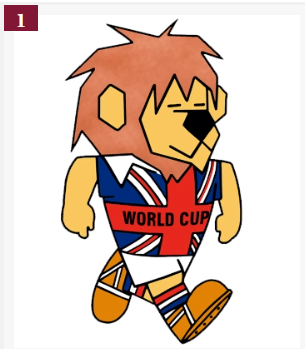
Juanito
Mexico 1970
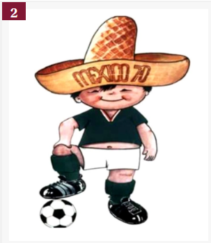
Tip y Tap
Alemania 1974
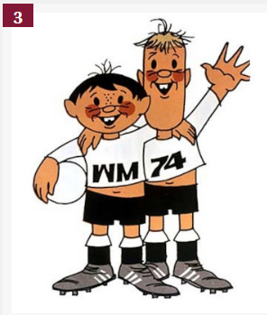
Gauchito
Argentina 1978
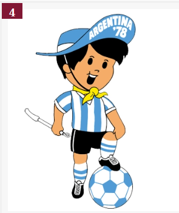
Naranjito
España 1982
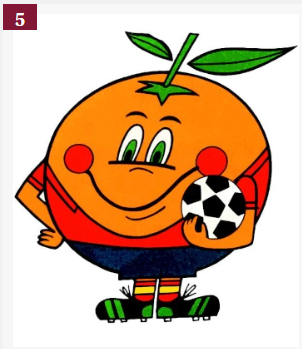
Pique
Maxico 1986
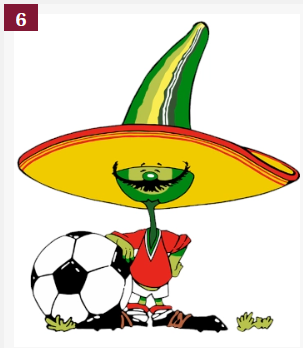
Ciao
Italia 1990
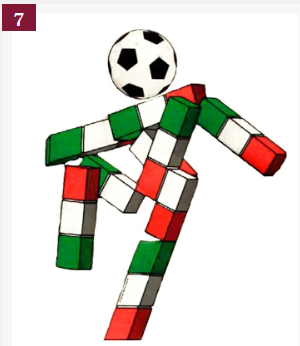
Striker
Estados Unidos 1994
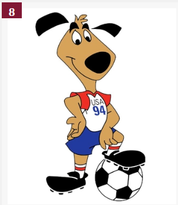
Footix
Francia 1998
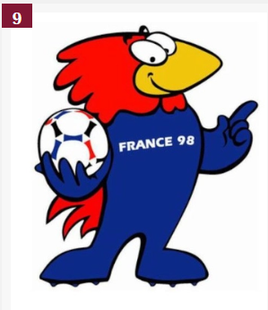
Ato, Kaz y Nik
Corea-Japon 2002
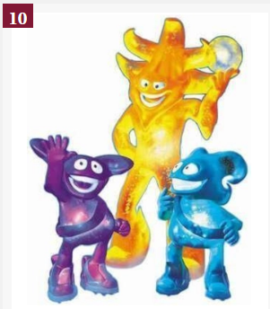
Goleo VI
Alemania 2006
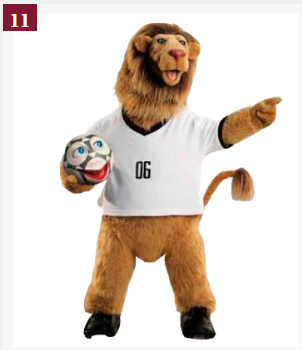
Zakumi
Sudafrica 2010
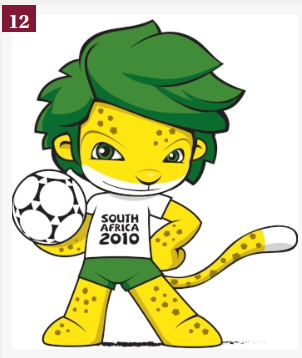
Fuleco
Brasil 2014
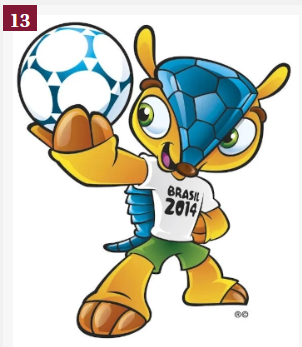
Zabivaka
Rusia 2018
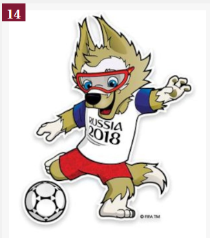
La'eeb
Qatar 2022
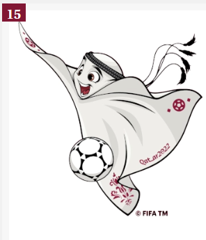